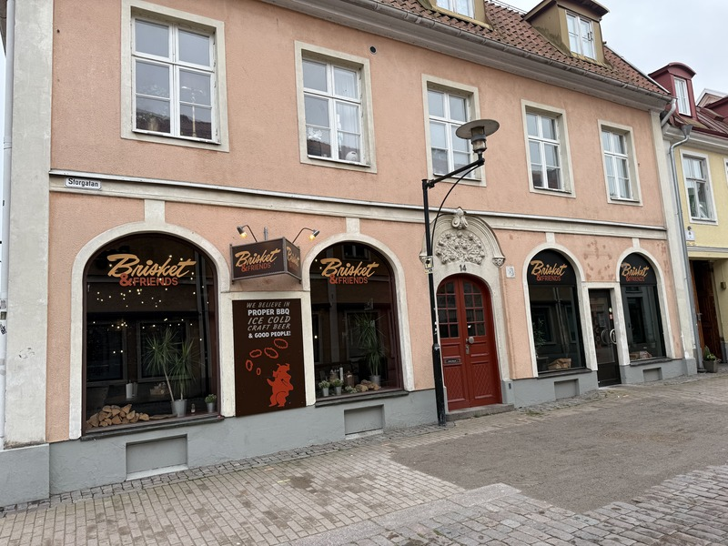
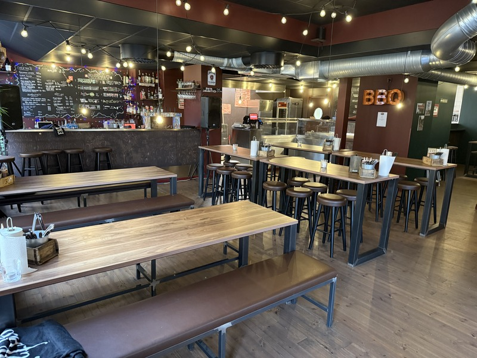
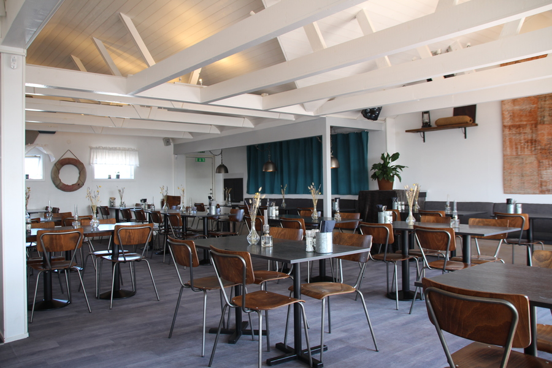
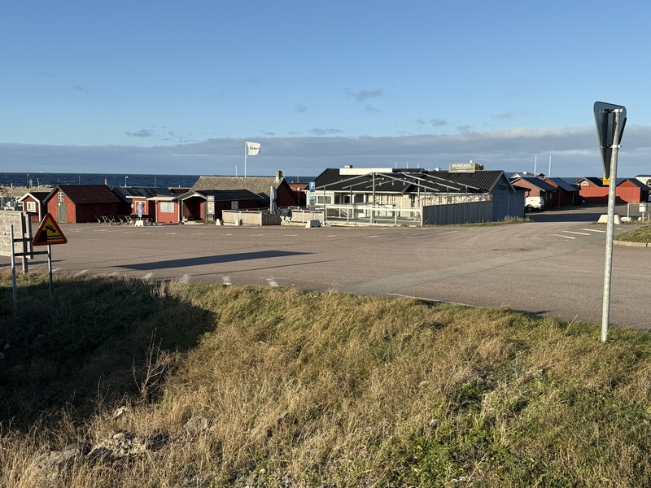
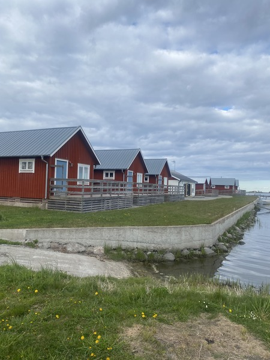
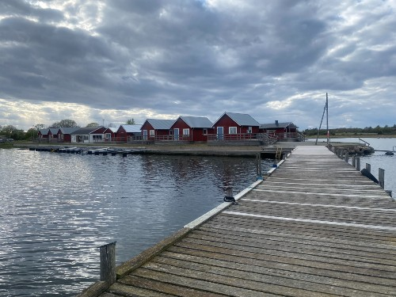

Företagsmäklarna är din naturliga partner vid företagsöverlåtelse. Vår affärsidé är att vara
den lokala mötesplatsen för överlåtelse av mindre företag inom Kalmars närområde och
Öland. Rätt kompetens, närhet till individen, hög integritet och brett nätverk är
hörnstenarna i vår verksamhet.
Funderar du på att köpa eller sälja? Hos oss möts alltid ditt uppdrag med största intresse
och, innan vi träffar avtal, utan någon kostnad eller förpliktelse från din sida.
Med mer än 40 års erfarenhet av företagsaffärer kan vi också bistå med rådgivning, förslag
till affärsupplägg och avtalsskrivning.
Här nedan finner du en kortare presentation av en del objekt som för närvarande är till salu. Du kan enkelt via mail eller mobil meddela om du är intresserad och vill ha kontakt.
Restaurangen öppnade här i Kalmar i juni 2024 och har en mycket positiv utveckling. Detta är BBQ som ibland i USA beskrivs som arbetarklassens mat som alternativ till finkrogen med de vita dukarna. Ett besök blir för många bara det första...
Här röker man allt kött färskt över natten med hickoryved på låg temperatur för att få valt kött mört. Här serveras öl från eget bryggeri, Big Bone Brows. Här erbjuds du deras klassiska Pickleback, en bourbonshot med picklejuice. Hela restaurangen är skapad och nyproducerad enligt den mall som denna franchisekedja efterlever. Lokalen är mycket trivsam och speglar känslan av att vara i Texas.
Som komplement erbjuder man även sina kunder catering och därmed möjligheten att äta riktig BBQ hemma på middagsbordet. Är du intresserad av BBQ och är serviceinriktad har du här möjlighet att utveckla en mycket uppskattad och lönsam rörelse.
För mer information, bokning av visning och vidare handläggning, kontakta företagsmäklare Pege Hussfelt. Ägaren och personal i verksamheten kommer inte att svara på frågor som vidrör denna affär. Tillträde sker efter överenskommelse.


En av Ölands mest välrenommerade restauranger söker ny ägare inför säsongen 2026. Är belägen direkt till höger på nedfarten till färjelägret i Byxelkrok.
Nuvarande ägare har drivit Hamnpuben sedan 2008 med utveckling från en glasskiosk och hamburgeri till den kompletta restaurangdrift som gäller idag. 2015 genomfördes den största ombyggnaden av bl a ett genomtänkt kök utrustat för ”stordrift” samt vinterisolerad serveringslokal.
Köpet består dels av fastigheten Borgholm Byxelkrok 1:11 och restaurangbyggnaden inkl samtlig inredning och inventarier samt tillgång till ett inhyrt förråd vid tomtgräns.
Hamnpuben öppnar redan till påsk och har fr o m maj månad öppet fredagar och lördagar som en värdefull och omtyckt service till den mer bofasta befolkning i Byxelkrok med omnejd.
Restaurangen har 180 platser varav 70 inomhus och 90 platser utomhus där det också erbjuds loungesoffor för ca 20 personer. Ägarna har också funnit en ny uppskattad väg de senaste åren vad gäller menyn. Man erbjuder ett antal rätter som är något mindre än vanliga huvudrätter och då till ett lägre pris.
Denna för dig intressanta affär innebär att bara fortsätta på inslagen väg med framtida möjlighet att utveckla ytterligare efter egen idé. För mer information och vidare handläggning, kontakta ansvarig mäklare. Personal i verksamheten kommer inte att svara på frågor.


Källahamn har en historia långt tillbaka i tiden och var framför allt känd som utskeppningshamn för kalksten. Den framstod som Ölands främsta hamn under 1800-talets sista hälft. Under 1930-talet utvecklades hamnen från husbehovsfiske till yrkesfiske, vilket pågick in i 1980-talet med goda fångster.
Därefter avtog fångsterna och verksamheten i hamnen stannade i stort upp. 2007 köptes hamnen av Lars och Stina Börjesson, vilka successivt byggt mindre stugor och parallellt etablerat stuguthyrning. 2021 bildade de BRF Ölandsand (BRF) som består av 11 medlemmar, vilka var och en äger och disponerar en stuga. När stugägarna inte är på plats hyrs stugorna ut till allmänheten.
Stuguthyrningen sköts av Källahamn Stugor & Spa AB (KSS). KSS sköter all kontakt med gästerna som marknadsföring, bokning och kontakt på plats samt tilläggstjänster som cykeluthyrning, linne m m. Säsongen är idag från mitten av april till början av oktober.
De bedriver också Spaverksamhet i stuga nr 7 som är inredd med bastu, ett mindre kök och umgängesyta. Ute på altanen finns även tillgång till ett spabad. KSS hyr byggnaden Hamnkontoret av BRF, vilken fungerar som lokal för konferenser, fester, kurser samt reception för uthyrningsverksamheten.
Lars och Stina har beslutat överlåta sin verksamhet i Källahamn till ny ägare. De erbjuder förvärv av stuga nr 7 (Spa huset) och bolaget KSS. Här ingår också övertag av hemsida (kallahamn.se), kundlistor och samtliga inneliggande avtal. För en ny ägare finns det goda möjligheter att utveckla företaget.
För mer information, bokning av visning och vidare handläggning, kontakta företagsmäklare Pege Hussfelt. Ägaren och personal i verksamheten kommer inte att svara på frågor som vidrör denna affär. Tillträde sker efter överenskommelse.


Hantverkargatan 33
386 30 Färjestaden